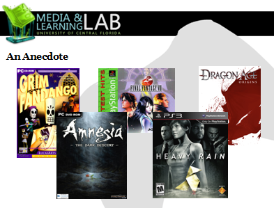
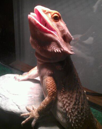

Welcome!
Thanks for stopping by!
I'm Veronica, and I dig designing graphical user interfaces, interactions, fancy applications, and generally enjoy creating things that are pleasing to the eye. Not only do I jump at the chance to make things look pretty, but I'm really great at making stuff work too. But hey, don't just take my word for it! I have plenty of solutions for today's modern-day graphical interface needs. Simply check out my portfolio and let me know if you have an awesome project I can contribute to.
Mobile
The InfraTouch
This was a mounted security interface project created on a team with three other electrical engineers. It was an Android-based user interface project deployed on custom hardware for various DoD and commercial security contracts. I was in charge of graphic design, top-level programming, and user-interface development all within the Android SDK framework.
iMobile
iMobile is currently undergoing further development. This application will be available for download via the Android Market as a supplement to enhance portability of user control within contracted security infrastructures; a project with similar functionality to the InfraTouch, but meant for deployment to Android mobile devices.
Research
Within the past year, I worked as a member of the Media Learning Lab, which is an organization within the University of Central Florida's Digital Media Department that specializes in researching the effects of interactive media on learning and cognition. The ultimate goal of these studies is to find, as well as create, optimal digital environments for learning engagement.
More information on the Media Learning Lab is located here.
One section of research done within the Media Learning Lab includes the focus on the potential for videogames to serve as powerful learning tools. The subject of videogames in particular has always been something of a personal interest of mine, so this was a field that I felt very fascinated by. While numerous studies have shown the connection between digital interactive mediums and a student's level of learning engagement, the goal was to explore avenues concerning what exactly about videogames was instrumental in creating an immersive and engaging environment.

Narrative in Videogames:
This study in particular was spearheaded by myself and my faculty advisor, Dr. Robb Lindgren. I decided to look into the effects of game narrative on learning and cognition greatly because I find myself drawn to very story-driven games as a personal preference. This study was presented at the International Digital Media and Arts Association Conference 2011 held in Savannah, GA, and was accepted into the Games+Learning+Society Conference 2012.
Biography
Oh gosh, where to begin...
...talking about myself is the weirdest part, y'know? Well, since you're here, I might as well try to keep things interesting! I was born in England and traveled around Europe all before I had the brain to remember it all. As a military brat, I ended up traveling all around the US, so I guess I can't really cite a hometown.
Though, I've lived in Florida the longest by far! Which is kind of a good thing too. There are SO many conventions here in Florida. Oh yeah! That's another thing about me that I should probably let people know.
Well, it's pretty evident that I'm your modern geek by all the implications of stuff you see on the site, but I also really, really like going to conventions! Yes, even dressing up in home made costumes, buying imported merchandise, meeting voice actors, and hanging out with others of my kind! It's quite fun. What are my other hobbies besides that, you ask? Well, I'm holding them right there in that picture! VIDEO GAMES!(and sometimes modeling).Roleplaying games are by far my top genre, but I've also become a huge fan of League of Legends (my summoner name is VeronicaVae, we should play some time!)

Last but certainly not least, I also have a super amazing bearded dragon named Renny (see picture of non-human). She's a Sandfire/Lemon color morph mix and pretty much my little reptile muse. Doesn't bite, doesn't make noise, doesn't smell bad. She also likes to smile at you. What more could you ask for in a pet?!
Eccentricities aside, I'm grateful to have been able to work through life at the pace that was intended while being able to enjoy my favorite hobbies along the way. As a recent University of Central Florida graduate, I'm excited to finally be able to take on any new and exciting projects that come my way without having to worry about homework at the end of the day. Yep, from here on out, everything I do is definitely going to have an impact on myself and those around me. Whether it be an innovative new user interface design, or a cutting-edge technology, or even a new game that ends up revolutionizing the way people learn or are entertained, I'm looking forward to infinite possibilities!

{kind=link}
{kind=link}
{kind=link}
{kind=link}
{kind=link}
{kind=link}
{kind=link}
{kind=link}
{kind=link}
{kind=link}
{kind=link}
{kind=link}
{kind=link}
{kind=link}
{kind=link}
{kind=link}
{kind=link}
{kind=link}